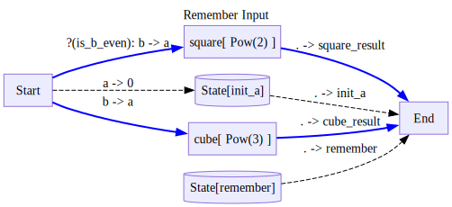
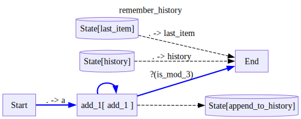
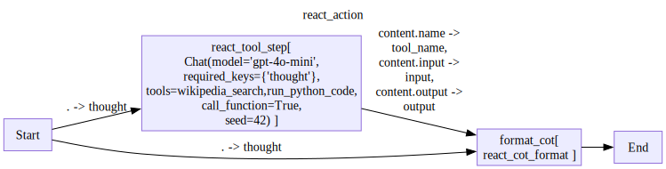
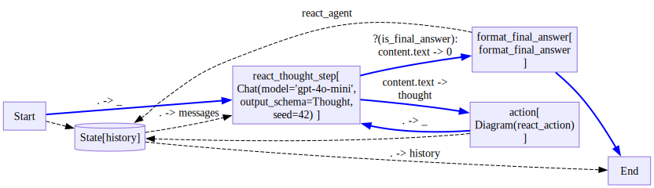
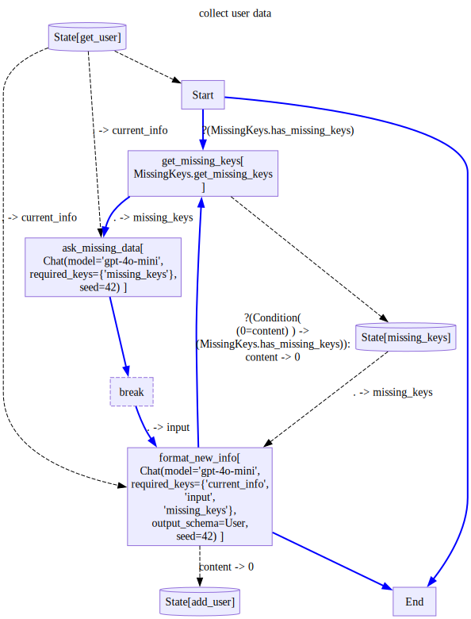

def add(a,b):
return a+b
class Pow():
def __init__(self,power):
self.power = power
def __call__(self,a):
return a**self.power
def __str__(self):
return f'Pow({self.power})'
def is_b_even(obj):
return obj['b']%2==0Custom State
Up until now, we have seen simple reading and writing to state variables, like so:
from stringdale import Define,V,E,Conditionwith Define('Remember Input',type='decision') as D:
V('square',Pow(2),inputs=[
('Start(a=b)',is_b_even),
],
outputs=['End(square_result=.)'])
V('cube',Pow(3),inputs=['Start(a=b)'],outputs=['End(cube_result=.)'])
E('Start->State/init_a(0=a)')
V('End',inputs=['State/init_a(init_a=.)'])
V('End',inputs=['State/remember(remember=.)'])
D.draw()
d=D()
d.state.remember = 100
for trace in d.run({'a':1,'b':2}):
trace.pprint(skip_passthrough=True)
d.output---
name: square
input:
a: 2
output: 4
{'square_result': 4, 'init_a': 1, 'remember': 100}However, sometimes we would like to read and write state in a more customized way, for example:
- Appending to a list or getting the last item from it
- Fetching the next item from a queue
- reading/writing from/to a database
Naively, this requires as to complicate our diagrams with additional nodes and helper functions that obscure the business logic of our diagram.
To remedy this, stringdale allows passing custom state objects to be used.
First, let us understand what is going on under the hood:
- stringdale can accept as State any Pydantic Model.
- By default, we supply every stringdale diagram with
BaseModelExtrawhich we will see bellow. - If we want to be able to serialize the diagram state, we need to make sure our Model is json serializable.
from stringdale import BaseModelExtra
import inspectAs you can see, BaseModelExtra is a pydantic model that allows setting and getting arbitrary attributes.
print(inspect.getsource(BaseModelExtra))class BaseModelExtra(BaseModel):
model_config = ConfigDict(extra='allow')
Before calling run, we can modify the state attribute however we like. This includes running a diagram that has stopped during a breakpoint before.
Let us see several examples of custom states:
TLDR
from pydantic import BaseModel, ConfigDict, computed_field
from typing import Annotated# a custom state is any basemodel
class CustomState(BaseModel):
# we can allow arbitrary attributes by setting extra='allow'
# this is useful for defining on the fly state keys with normal behavior
model_config = ConfigDict(extra='allow')
# we can define normal attributes that will be part of the serialized state
history:list[int] = list()
# we can define private attributes that will not be part of the serialized state
# to be used internally by other methods
_hidden_attribute:str = 'hidden'
# we can define computed fields that will be computed on access
# these can be read, but not written to
@computed_field
def last_message(self)->int:
if len(self.history) == 0:
return 0
return self.history[-1]
# if we want to use the default getter for an object, but use a custom setter
# we can annotate the attribute with the setter function
annotated_list: Annotated[list[int],list.append] = list()
# we can write custom getter methods that only take self, that will be called when reading from
# state/first_message
def first_message(self)->int:
if len(self.history) == 0:
return 0
return self.history[0]
# we can write custom setter methods that only take self, and the value to set
# and will be called when writing to state/add_message
def add_message(self,value):
self.history.append(value)
# we can also define pythonic properties via the @property decorator
@property
def hidden(self):
return self._hidden_attribute
@hidden.setter
def hidden(self,value):
self._hidden_attribute = valueSaving history of a node to a list
def add_1(a:int)->int:
return a+1
def is_mod_3(a:int)->bool:
return a%3==0class CustomState(BaseModel):
# note that without the extra='allow' we would not be able to set any other state attributes
history:list[int] = list()
def append_to_history(self,value:int):
self.history.append(value)
def last_item(self)->int:
return self.history[-1]
with Define('remember_history',type='decision',state=CustomState()) as D:
V('add_1',add_1,
inputs=['Start(a=.)'],
outputs=[
'State/append_to_history',
('End',is_mod_3),
'add_1'
])
V('End',inputs=[
'State/last_item(last_item=.)',
'State/history(history=.)'
])
D.draw()
d = D()
for trace in d.run(0):
trace.pprint(skip_passthrough=True)
d.output---
name: add_1
input:
a: 0
output: 1
---
name: add_1
input:
0: 1
output: 2
---
name: add_1
input:
0: 2
output: 3
{0: 3, 'last_item': 3, 'history': [1, 2, 3]}Example - React Agent
from stringdale.chat import Chat
from pydantic import BaseModel
from typing import Literal,Optional,Any
from stringdale.tools import wikipedia_search,run_python_code
from pprint import pprintLet us define a thinking agent and an tool calling agent
react_system_prompt = [{'role':'system','content':"""
Answer the following questions as best you can.
Here is an example of the format of the answer:
Question: the input question you must answer
Thought: you should always think about what to do
Tool Name: the name of the tool you will use
Tool Input: the input to the tool
Observation: the result of the tool
This thought - tool name - tool input - observation can repeat N times
Final Answer: the final answer to the original input question
Each time you are prompter either provide a thought that you need to use a tool or provide a final answer.
the tool name, input and observation will be provided to you in the next message.
Example:
user:
Question: what is the year five years from now?
assistant:
Thought: I need to compute the current year
Tool Name: wikipedia_search
Tool Input: {query: 'what is the current year'}
Observation: 2024
Thought: I need to add 5 to the current year
Tool Name: run_python_code
Tool Input: {code: 'import datetime; result = datetime.datetime.now().year + 5',output_expression='result'}
Observation: 2029
Final Answer: 2029
"""}]
class Thought(BaseModel):
type: Literal['thought','final_answer']
text: str
react_thought_step = Chat(model='gpt-4o-mini',
output_schema=Thought,
)
react_thought_stepChat(model='gpt-4o-mini', output_schema=Thought, seed=42)await react_thought_step(messages=react_system_prompt+[{'role':'user','content':'who is obama?'}]){'role': 'assistant',
'content': Thought(type='thought', text='I need to gather information about who Obama is.'),
'meta': {'input_tokens': 405, 'output_tokens': 24}}tools = {
'wikipedia_search':wikipedia_search,
'run_python_code':run_python_code,
}
react_tool_step = Chat(model='gpt-4o-mini',
messages= [
{'role':'system','content':'choose an appropriate tool to use to answer the following:'},
{'role':'user','content':'{{thought}}'}],
tools=tools,
call_function=True
)
await react_tool_step(thought='what is the capital of france?'){'role': 'assistant',
'content': {'name': 'wikipedia_search',
'input': {'q': 'capital of France'},
'output': "This is a chronological list of capitals of France. The capital of France has been Paris since its liberation in 1944.\n\n\n== Chronology ==\nTournai (before 486), current-day Belgium\nSoissons (486–936)\nLaon (936–987)\nParis (987–1419), the residence of the Kings of France, although they were consecrated at Reims.\nOrléans (1108), one of the few consecrations of a French monarch to occur outside of Reims occurred at Orléans, when Louis VI the Fat was consecrated in Orléans Cathedral by Daimbert, Archbishop of Sens; from 13 December 1560 to 31 January 1561, the French States-General also met in the city.\nTroyes (1419–1422), for a short time during the Hundred Years' War, the city was the seat of the royal government.\nBourges (1422–1444), Charles VII was forced to flee from Paris.\nTours (1444–1527), Louis XI made the Château de Plessis-lez-Tours his residence.\nParis (1528–1589), Francis I had established his court in Paris.\nTours (1589–1594), faction of parliamentarians, faithful to King Henry IV sat at Tours.\nParis (1594–1682)\nVersailles (1682–1789), from 1682 to 1715, Louis XIV made Versailles his residence and the seat of the French court.\nParis (1789–1871), on 5 and 6 October 1789, a throng from Paris invaded the castle and forced the royal family to move back to Paris. The National Constituent Assembly followed the King to Paris soon afterward; Versailles lost its role of capital city.\nProvisional seats of the government:\n\nVersailles (1871), the French Third Republic established Versailles as its provisional seat of government in March 1871 after the Paris Commune took control of Paris.\nBordeaux (September 1914), the government was relocated from Paris to Bordeaux very briefly during World War I, when it was feared that Paris would soon fall into German hands. These fears were alleviated after the German Army was pushed back at the First Battle of the Marne.\nTours (10–13 June 1940), the city served as the temporary capital of France during World War II after the government fled Paris due to the German advance.\nBordeaux (June 1940), the government was relocated from Paris to Tours then Bordeaux very briefly during World War II, when it became apparent that Paris would soon fall into German hands.\nClermont-Ferrand (29 June 1940), the government was relocated from Bordeaux to Clermont-Ferrand, during a single day, before going to Vichy, which had a larger hotel capacity.\nVichy (1940–1944), the Third Republic was abolished in Vichy and replaced it with the French State.\nBrazzaville (1940–1943), with metropolitan France under Axis powers rule, Brazzaville was announced as the seat of the Free France government.\nAlgiers (1943–1944), the city was made the seat of Free France, to be closer to the war in Europe.\nParis (1945–present day).\n\n\n== References =="},
'meta': {'input_tokens': 345, 'output_tokens': 17}}def react_cot_format(thought,tool_name,input,output):
return {
'role':'assistant',
'content':f"""Thought: {thought}
Tool Name: {tool_name}
Tool Input: {input}
Observation: {output}"""
}
def format_final_answer(final_answer):
return {
'role':'assistant',
'content': final_answer
}
is_final_answer= Condition('final_answer','(0=content.type)',name='is_final_answer')Now let us create a custom state that tracks the history.
Since appending to a list is so simple, we can use the setter annotation to avoid implementing append_to_history
class CustomState(BaseModel):
# note that without the extra='allow' we would not be able to set any other state attributes
history:Annotated[list[Any],list.append] = list()
with Define('react_action',type='flow') as ReactAction:
V('react_tool_step',react_tool_step,
inputs=['Start(thought=.)'],
)
V('format_cot',react_cot_format,
inputs=[
'Start(thought=.)',
'react_tool_step(tool_name=content.name,input=content.input,output=content.output)',
],
outputs=['End']
)
ReactAction.draw()
with Define('react_agent',type='decision',state=CustomState()) as ReactAgent:
V('Start',outputs=['state/history'])
V('react_thought_step',react_thought_step,
inputs=['Start(_)','State/history(messages=.)'],
outputs=[
('format_final_answer(0=content.text)',is_final_answer),
('action(thought=content.text)',),
])
V('action',ReactAction,
outputs=[
'State/history',
'react_thought_step(_)'
])
V('format_final_answer',format_final_answer,
outputs=[
'State/history',
'End'
])
V('End',inputs=[
'State/history(history=.)'
])
ReactAgent.draw()

d=ReactAgent()
d.state.history = react_system_prompt
user_input = {'role':'user','content':"Question: what is obamas age to the power of 2?"}
for trace in d.run(user_input):
pass
print(d.output[0]){'role': 'assistant', 'content': "Obama's age to the power of 2 is 4096."}for msg in d.output['history']:
print(f"{msg['role']}:")
print(msg['content'][:2000])
if len(msg['content']) > 2000:
print('...')
print('='*80)system:
Answer the following questions as best you can.
Here is an example of the format of the answer:
Question: the input question you must answer
Thought: you should always think about what to do
Tool Name: the name of the tool you will use
Tool Input: the input to the tool
Observation: the result of the tool
This thought - tool name - tool input - observation can repeat N times
Final Answer: the final answer to the original input question
Each time you are prompter either provide a thought that you need to use a tool or provide a final answer.
the tool name, input and observation will be provided to you in the next message.
Example:
user:
Question: what is the year five years from now?
assistant:
Thought: I need to compute the current year
Tool Name: wikipedia_search
Tool Input: {query: 'what is the current year'}
Observation: 2024
Thought: I need to add 5 to the current year
Tool Name: run_python_code
Tool Input: {code: 'import datetime; result = datetime.datetime.now().year + 5',output_expression='result'}
Observation: 2029
Final Answer: 2029
================================================================================
user:
Question: what is obamas age to the power of 2?
================================================================================
assistant:
Thought: {'thought': "I need to determine Obama's current age."}
Tool Name: wikipedia_search
Tool Input: {'q': 'Barack Obama'}
Observation: Barack Hussein Obama II (born August 4, 1961) is an American politician who was the 44th president of the United States from 2009 to 2017. A member of the Democratic Party, he was the first African American president. Obama previously served as a U.S. senator representing Illinois from 2005 to 2008 and as an Illinois state senator from 1997 to 2004.
Born in Honolulu, Hawaii, Obama graduated from Columbia University in 1983 with a Bachelor of Arts degree in political science and later worked as a community organizer in Chicago. In 1988, Obama enrolled in Harvard Law School, where he was the first black president of the Harvard Law Review. He became a civil rights attorney and an academic, teaching constitutional law at the University of Chicago Law School from 1992 to 2004. In 1996, Obama was elected to represent the 13th district in the Illinois Senate, a position he held until 2004, when he successfully ran for the U.S. Senate. In the 2008 presidential election, after a close primary campaign against Hillary Clinton, he was nominated by the Democratic Party for president. Obama selected Joe Biden as his running mate and defeated Republican nominee John McCain and his running mate Sarah Palin.
Obama was awarded the 2009 Nobel Peace Prize for efforts in international diplomacy, a decision which drew both criticism and praise. During his first term, his administration responded to the 2008 financial crisis with measures including the American Recovery and Reinvestment Act of 2009, a major stimulus package to guide the economy in recovering from the Great Recession; a partial extension of the Bush tax cuts; legislation to reform health care; and the Dodd–Frank Wall Street Reform and Consumer Protection Act, a major financial regulation reform bill. Obama also appointed Supreme Court justices Sonia Sotomayor and Elena Kagan, the for
...
================================================================================
assistant:
Thought: {'thought': "I need to calculate Obama's current age to find the answer."}
Tool Name: wikipedia_search
Tool Input: {'q': 'Barack Obama'}
Observation: Barack Hussein Obama II (born August 4, 1961) is an American politician who was the 44th president of the United States from 2009 to 2017. A member of the Democratic Party, he was the first African American president. Obama previously served as a U.S. senator representing Illinois from 2005 to 2008 and as an Illinois state senator from 1997 to 2004.
Born in Honolulu, Hawaii, Obama graduated from Columbia University in 1983 with a Bachelor of Arts degree in political science and later worked as a community organizer in Chicago. In 1988, Obama enrolled in Harvard Law School, where he was the first black president of the Harvard Law Review. He became a civil rights attorney and an academic, teaching constitutional law at the University of Chicago Law School from 1992 to 2004. In 1996, Obama was elected to represent the 13th district in the Illinois Senate, a position he held until 2004, when he successfully ran for the U.S. Senate. In the 2008 presidential election, after a close primary campaign against Hillary Clinton, he was nominated by the Democratic Party for president. Obama selected Joe Biden as his running mate and defeated Republican nominee John McCain and his running mate Sarah Palin.
Obama was awarded the 2009 Nobel Peace Prize for efforts in international diplomacy, a decision which drew both criticism and praise. During his first term, his administration responded to the 2008 financial crisis with measures including the American Recovery and Reinvestment Act of 2009, a major stimulus package to guide the economy in recovering from the Great Recession; a partial extension of the Bush tax cuts; legislation to reform health care; and the Dodd–Frank Wall Street Reform and Consumer Protection Act, a major financial regulation reform bill. Obama also appointed Supreme Court justices Sonia Sotomayor and E
...
================================================================================
assistant:
Thought: {'thought': "I need to calculate Obama's age now to find the answer."}
Tool Name: run_python_code
Tool Input: {'code': 'from datetime import datetime\nobama_birthdate = datetime(1961, 8, 4)\ntoday = datetime.now()\nobama_age = today.year - obama_birthdate.year - ((today.month, today.day) < (obama_birthdate.month, obama_birthdate.day))\nobama_age'}
Observation: 64
================================================================================
assistant:
Thought: {'thought': "I need to calculate the square of Obama's age."}
Tool Name: wikipedia_search
Tool Input: {'q': 'Barack Obama age'}
Observation: Barack Hussein Obama Sr. (; born Baraka Obama, 18 June 1934 – 24 November 1982) was a Kenyan senior governmental economist and the father of Barack Obama, the 44th president of the United States. He is a central figure of his son's memoir, Dreams from My Father (1995). Obama married in 1954 and had two children with his first wife, Kezia. He was selected for a special program to attend college in the United States and studied at the University of Hawaii where he met Stanley Ann Dunham, whom he married in 1961 following the conception of his son, Barack. Obama and Dunham divorced three years later. Obama then went to Harvard University for graduate school, where he earned an M.A. in economics, and returned to Kenya in 1964. He saw his son Barack once more, when his son was about 10.
In late 1964, Obama Sr. married Ruth Beatrice Baker, a Jewish-American woman he had met in Massachusetts. They had two sons together before separating in 1971 and divorcing in 1973. Obama first worked for an oil company, before beginning work as an economist with the Kenyan Ministry of Transport. He was promoted to senior economic analyst in the Ministry of Finance. He was among a cadre of young Kenyan men who had been educated in the West in a program supported by Tom Mboya. Obama Sr. had conflicts with Kenyan president Jomo Kenyatta, which adversely affected his career. He was fired and blacklisted in Kenya, finding it nearly impossible to get a job. Obama Sr. was involved in three serious car accidents during his final years; he died as a result of the last one in 1982.
== Early life ==
Barack Obama Sr. was born in 1934 in Rachuonyo District on the shores of Lake Victoria just outside Kendu Bay, Kenya, at the time a colony and protectorate of the British Empire. He was raised in the village of Nyang'oma Kogelo, Siaya District, Nyanza Pr
...
================================================================================
assistant:
Obama's age to the power of 2 is 4096.
================================================================================Example - Collecting User Info to a DataBase.
Let us see a slightly more sophisticated version of the collecting user info workflow we saw in the decision diagram tutorial.
For this demo we will use a small utility for creating a shared in-memory sqlite db and connecting to it via sqlalchemy.
We will also use SQLModel to sync our database schema with the output schema we will request our LLM to parse from text.
from stringdale.db import temp_sql_db
from sqlmodel import SQLModel, Session, select, Fieldengine = temp_sql_db()Let us make our user data object
class User(SQLModel, table=True,extend_existing=True):
id: int = Field(default=None, primary_key=True)
name: Optional[str] = Field(default=None)
age: Optional[int] = Field(default=None)
email: Optional[str] = Field(default=None)
# Loads the schema of all SQLModel subclasses into the db
SQLModel.metadata.create_all(engine)Let us recall our previous get user data workflow:
ask_missing_data = Chat(
model='gpt-4o-mini',
messages=[
{'role':'system','content':'''
You are a helpful assistant asks the user for missing information.
Do not ask for keys if they are not a part of the missing keys
Ask the user for the following missing keys:
{{missing_keys}}
'''}])
format_new_info = Chat(
model='gpt-4o-mini',
messages=[
{'role':'system','content':'''
You are a helpful assistant that gets user data and makes sure it is complete.
If you are not sure that you were given the relevant information, put None in the relevant field.
Fill part of the missing keys based on the user data.
If the user didnt provide info an a given missing key, leave it empty
{% if current_info %}
The information we have so far is:
{{current_info}}
{% endif %}
The missing keys are:
{{missing_keys}}
'''},
{'role':'user','content':'{{input}}'},
],
output_schema=User)
class MissingKeys():
def __init__(self,keys):
self.keys = keys
def get_missing_keys(self,obj):
return [key for key in self.keys if getattr(obj,key,None) is None]
def has_missing_keys(self,obj):
return len(self.get_missing_keys(obj)) > 0
missing = MissingKeys(['name','age'])with Define('collect user data',type='decision') as UserQA:
V('Start',
outputs=[
('get_missing_keys',missing.has_missing_keys),
('End',),
('state/current_info',)
])
V('get_missing_keys',missing.get_missing_keys,
outputs=[
'ask_missing_data(missing_keys)',
'state/missing_keys'
])
V('ask_missing_data',ask_missing_data,
inputs=['state/current_info(current_info)'],
outputs=['break'] )
V('break',is_break=True,outputs=['format_new_info(input)'])
V('format_new_info',format_new_info,
inputs=[
'state/current_info(current_info)',
'state/missing_keys(missing_keys=.)'
],
outputs=[
('get_missing_keys(0=content)',Condition(missing.has_missing_keys,'(0=content)')),
'End',
'state/current_info'
])
UserQA.draw(direction='TB')
Now, let us create our custom state, which will have methods for getting and setting users in our db.
class UserDBState(BaseModel):
model_config = ConfigDict(extra='allow')
engine: Optional[Any] = None
user_id: Optional[int] = None
# this is a private attribute that will not be serialized
# used to cache the user object to avoid extra db calls
_user:Optional[User]=None
def get_user(self):
user_id = self.user_id
if not self._user is None:
return self._user
with Session(self.engine) as session:
user = session.exec(select(User).where(User.id == user_id)).first()
self._user = user
if self._user is None:
self._user = User(id=user_id)
return self._user
def add_user(self,user_data):
self._user = user_data
with Session(self.engine) as session:
session.merge(user_data)
session.commit()Our new DB workflow will look very similar to the old one, but instead of reading and writing to current info, we will use the get_user and add_user methods of our state object.
We will also read the user info into start, so we can skip the workflow if we have all the info we need.
with Define('collect user data',type='decision',state=UserDBState()) as UserQADB:
V('Start',
inputs=['state/get_user(0=.)'],
outputs=[
('get_missing_keys',missing.has_missing_keys),
('End',),
])
V('get_missing_keys',missing.get_missing_keys,
outputs=[
'ask_missing_data(missing_keys)',
'state/missing_keys'
])
V('ask_missing_data',ask_missing_data,
inputs=['state/get_user(current_info)'],
outputs=['break'] )
V('break',is_break=True,outputs=['format_new_info(input)'])
V('format_new_info',format_new_info,
inputs=[
'state/get_user(current_info)',
'state/missing_keys(missing_keys=.)'
],
outputs=[
('get_missing_keys(0=content)',Condition(missing.has_missing_keys,'(0=content)')),
'End',
'state/add_user(0=content)'
])
UserQADB.draw(direction='TB')
d = UserQADB()
# we can change the attributes of the UserDBState object
d.state.user_id = 1
d.state.engine = engine
# or just override the state object completely
d.state = UserDBState(user_id=1,engine=engine)
d.state.get_user()User(id=1, name=None, age=None, email=None)d.run_all(input=None){'role': 'assistant',
'content': 'Could you please provide your name and age?',
'meta': {'input_tokens': 50, 'output_tokens': 9}}d.run_all('alice, 25yo'){'role': 'assistant',
'content': User(id=1, name='alice', age=25, email=None),
'meta': {'input_tokens': 356, 'output_tokens': 29}}Since we have saved the result to a DB, if we try to run this diagram again for the same user, we will skip straight to the end, since all user data will be retrieved from the DB.
d = UserQADB()
d.state = UserDBState(user_id=1,engine=engine)
d.state.get_user()User(email=None, name='alice', id=1, age=25)d.run_all(input=None)User(email=None, name='alice', id=1, age=25)